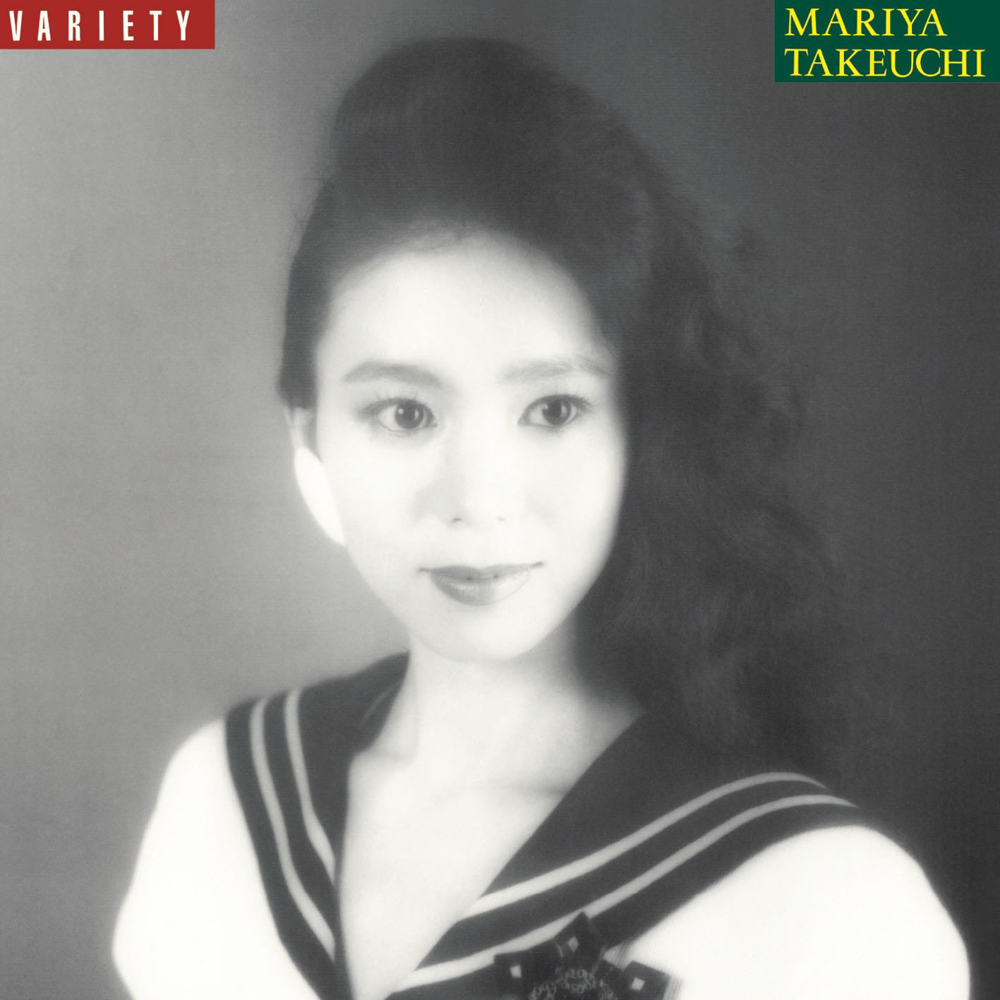

山下達郎 ◆ Plastic Love Live ◆ 1986
链接的是前几天在哔哩哔哩碰见的稀有山下達郎现场演出，很有感觉（很有感觉是什么感觉？就是那种感觉），尤其是结尾地即兴演出www
大家更熟悉的估计是他老婆竹内玛利亚在油管上那个视频：竹内 まりや Plastic Love
豆知识：上面那张其实不是原版的封面，原版的封面是这张：

如你所见，不是很吸引人……传视频的那个老哥还是很懂的www
Bonus: you reposted in the wrong plastic love
[ヴァース 1]
突然のキスや 熱いまなざしで
恋のプログラムを 狂わせないでね
出逢いと別れ 上手に打ち込んで
時間がくれば終わる Don't hurry!
[ヴァース2]
愛に傷ついた あの日からずっと
昼と夜が逆の 暮らしを続けて
はやりのDiscoで 踊り明かすうちに
おぼえた魔術なのよ I'm sorry!
[コーラス 1]
わたしのことを決して 本気で愛さないで
恋なんてただのゲーム 楽しめばそれでいいの
閉ざした心を飾る 派手なドレスも靴も
孤独な友達
[コーラス 2]
わたしを誘う人は 皮肉なものね いつも
彼に似てるわなぜか 思い出と重なり合う
グラスを落として急に 涙ぐんでも
わけは尋ねないでね
[ヴァース 2]
愛に傷ついた あの日からずっと
昼と夜が逆の 暮らしを続けて
はやりのDiscoで 踊り明かすうちに
おぼえた魔術なのよ I'm sorry!
[コーラス1]
わたしのことを決して 本気で愛さないで
恋なんてただのゲーム 楽しめばそれでいいの
閉ざした心を飾る 派手なドレスも靴も
孤独な友達
[ヴァース 3]
夜更けの高速で 眠りにつくころ
ハロゲンライトだけ 妖しく輝く
氷のように冷たい女だと
ささやく声がしても Don't worry!
[アウトロ]
I'm just playing games
I know that's plastic love
Dance to the plastic beat
Another morning comes
I'm just playing games
I know that's plastic love
Dance to the plastic beat
Another morning comes
I'm just playing games
I know that's plastic love
Dance to the plastic beat
Another morning comes
来源：Genius